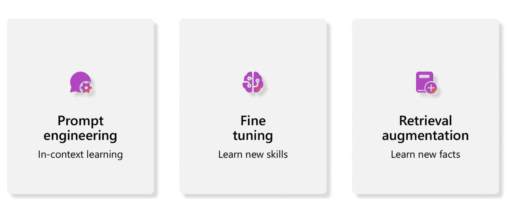
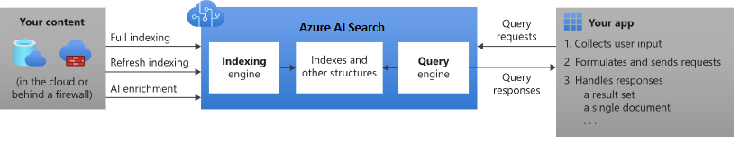

RAG - Introduction#
See also
If you are new to copilot and RAG concepts, consider going through these resources after the workshop:
Introduction#
Retrieval Augmentation Generation (RAG) is an architecture that augments the capabilities of a Large Language Model (LLM) by adding an information retrieval system that provides grounding data. It is a major architectural pattern for most enterprise GenAI applications, increasingly used in our latest engagements.
Note
RAG is not the only solution for incorporating domain knowledge, as illustrated below:

RAG Architecture

Information retrieval system
Why is the information retrieval system important? Because it gives you control over the knowledge that the LLM is using to formulate a response. That means that you can constrain the LLM to your own content from vectorized documents, images, and other data formats.
Azure AI Search
Azure AI Search is a proven solution for information retrieval in a RAG architecture. Architecturally, it sits between the external data stores (with un-indexed data) and your client app. The client app sends query requests to a search index and handles the response:

Vector search in Azure AI Search - Overview
Vector search is an approach in information retrieval that stores numeric representations of content for search scenarios.

Note
Approaches for RAG with Azure AI Search
Due to its increased popularity, Microsoft has several built-in implementations for using Azure AI Search in a RAG solution.
Azure AI Studio, use a vector index and retrieval augmentation - Preview.
Azure OpenAI Studio, use a search index with or without vectors - Preview.
Azure Machine Learning, use a search index as a vector store in a prompt flow - Preview.
During this workshop, we will take a code-first approach.